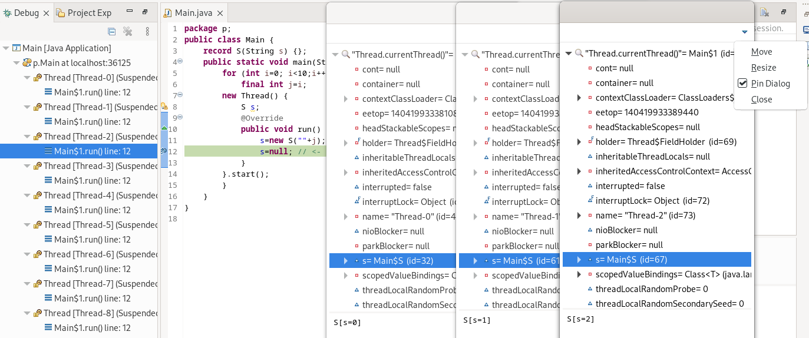
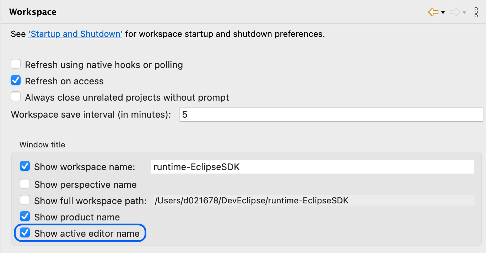
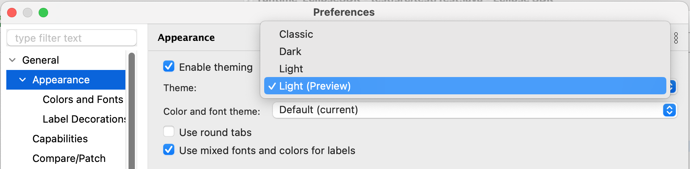

Views, Dialogs and Toolbar
The pop-up dialog that is displayed when calling the Inspect debug action now offer a menu to Pin it so it remains visible even when focusing on other UI elements.
This can be convenient for example when comparing similar expressions, but in different debug contexts (different applications, different launches or different threads).

Text Editors
The find/replace dialog for performing search and replace operations within an open editor now appears as a seamlessly integrated overlay on top of the editor. By default, it performs a "search as you type" and opens with the replace bar collapsed, thus focussing on the mostly used search functionality.

The replace bar can be opened on demand using the expand button or with the according keyboard shortcut
(Ctrl/Cmd + R).

 Case sensitive search
(
Case sensitive search
(Ctrl/Cmd+Shift+C) Whole word search
(
Whole word search
(Ctrl/Cmd+Shift+W) Search for a regular
expression (
Search for a regular
expression (Ctrl/Cmd+Shift+P) Search in a selected area
(
Search in a selected area
(Ctrl/Cmd+Shift+A)
In case you prefer the old find/replace dialog, you can disable the overlay in the preferences under General -> Editors -> Text Editors. You can also change in the preferences whether you prefer to have the overlay appear at the bottom instead of the top of the editor.

The overlay keeps a history of the past searches and updates the history everytime you perform a search. Searches by "search as you type" will not be stored to the history. You can also navigate the history using the arrow keys up or down.

Preferences
Up to now the workbench window title can be customized to display workspace name, perspective name, full path and product name. The active editor name is shown as a part of the window title but could not customized. This can now be customized on the General -> Workspace preference page via the Show active editor name checkbox.

Themes and Styling
After many years of stability we have reworked the light theme of Eclipse to follow more modern design principles, similar to other major IDEs:
- Lightweight view tab design
- Flat look - No use of 3D gradients
- Views use a darker background color.
These improvement are not yet completed but are available as a preview.

You can try it out by selecting Light (Preview) on the General > Appearance preference page. See issue #2114 for more details and the motivation behind these changes and to give your feedback.
The improvements in the Light (Preview) theme will be integrated in the standard Light theme once ready and the Light (Preview) will be removed again.